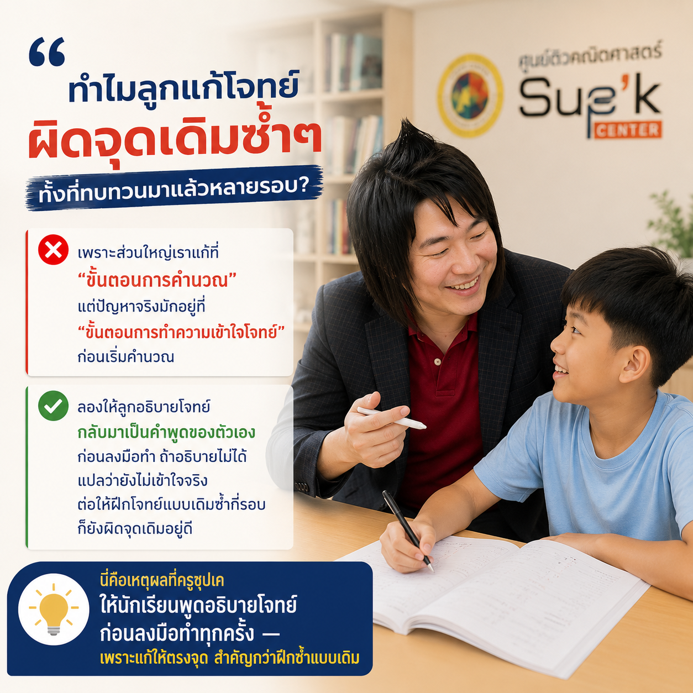

Pillar 1 — Learn Better
"ทำไมลูกแก้โจทย์ผิดจุดเดิมซ้ำๆ ทั้งที่ทบทวนมาแล้วหลายรอบ?"
เพราะส่วนใหญ่เราแก้ที่ "ขั้นตอนการคำนวณ" แต่ปัญหาจริงมักอยู่ที่ "ขั้นตอนการทำความเข้าใจโจทย์" ก่อนเริ่มคำนวณ
ลองให้ลูกอธิบายโจทย์กลับมาเป็นคำพูดของตัวเองก่อนลงมือทำ ถ้าอธิบายไม่ได้ แปลว่ายังไม่เข้าใจจริง ต่อให้ฝึกโจทย์แบบเดิมซ้ำกี่รอบก็ยังผิดจุดเดิมอยู่ดี
นี่คือเหตุผลที่ครูซุปเคให้นักเรียนพูดอธิบายโจทย์ก่อนลงมือทำทุกครั้ง — เพราะแก้ให้ตรงจุด สำคัญกว่าฝึกซ้ำแบบเดิม
Pillar 2 — Education Insight
"AI แก้โจทย์เลขได้ในไม่กี่วินาที แล้วเด็กยังต้องเรียนคณิตศาสตร์อยู่ไหม?"
คำถามนี้ครูซุปเคได้ยินบ่อยขึ้นเรื่อยๆ ในช่วง 1-2 ปีที่ผ่านมา
คำตอบคือ "ต้องเรียน" แต่เรียนเพื่อจุดประสงค์ที่ต่างไปจากเดิม
AI ตอบคำตอบให้เราได้ แต่ไม่ได้สอนให้ "คิดเป็นขั้นตอน" ซึ่งเป็นทักษะที่ใช้ได้กับทุกปัญหาในชีวิต ไม่ใช่แค่ในห้องสอบ
คณิตศาสตร์ในยุค AI จึงไม่ใช่วิชาที่สอนให้หาคำตอบเก่งที่สุด แต่สอนให้ "ตั้งคำถามและวางแผนแก้ปัญหา" เก่งที่สุดต่างหาก
Pillar 3 — Student Success
"จากเด็กที่กลัวเลขที่สุดในห้อง สู่ที่ 1 สอบเข้าเตรียมอุดมฯ สายวิทย์-คณิต"
น้องณฐกรเริ่มเรียนกับครูซุปเคตอน ม.2 ด้วยพื้นฐานที่ยังไม่แน่นเท่าที่ควร
สิ่งที่เปลี่ยนไม่ใช่แค่คะแนน แต่คือ "ทัศนคติ" ที่มีต่อวิชาคณิตศาสตร์ — จากที่เคยรู้สึกว่าตัวเองไม่เก่งเลข กลายเป็นวิชาที่มั่นใจที่สุดตอนสอบเข้า
ผลลัพธ์คือที่ 1 สอบเข้า ม.4 โรงเรียนเตรียมอุดมศึกษา สายวิทย์-คณิต
เรื่องราวแบบนี้คือเหตุผลที่ครูซุปเคยังทำสิ่งนี้ต่อไป

Pillar 4 — Parent Guide
"ลูกบอกว่า 'เข้าใจแล้ว' แต่พอทำโจทย์เองกลับทำไม่ได้ ผู้ปกครองควรทำยังไง?"
เป็นสถานการณ์ที่ผู้ปกครองหลายคนเจอบ่อยที่สุด
วิธีเช็คง่ายๆ คือให้ลูกลองสอนโจทย์ข้อนั้นกลับมาให้เราฟัง — ถ้าอธิบายเป็นขั้นตอนได้ครบ แปลว่าเข้าใจจริง แต่ถ้าตอบได้แค่ "มันก็ง่ายๆ" โดยอธิบายต่อไม่ได้ นั่นคือสัญญาณว่ายังไม่เข้าใจ
ไม่จำเป็นต้องเก่งเลขเพื่อเช็คแบบนี้ แค่ฟังว่าลูกอธิบายได้เป็นเหตุเป็นผลหรือเปล่าก็พอ

Pillar 5 — Behind the Teacher
"ก่อนจะเป็นครูซุปเค ผมเคยเป็นตัวแทนประเทศไทยไปแข่งคณิตศาสตร์โอลิมปิกที่อาร์เจนตินา"
ตอนนั้นผมยังไม่รู้เลยว่าเส้นทางหลังจากนี้จะพาผมมาเป็นครู
ระหว่างทางผมเลือกเรียนวิศวกรรมเคมี ซึ่งดูเหมือนจะไปคนละทางกับการสอน แต่สุดท้ายกลับพาผมมาเจอสิ่งที่เชื่อจริงๆ ว่า "การศึกษาที่ดีเปลี่ยนชีวิตคนได้"
Sup'K Center จึงเกิดขึ้นจากความเชื่อนั้น ไม่ใช่แผนธุรกิจที่วางไว้ตั้งแต่แรก

Pillar 6 — Inspiration
"ครูก็ยังต้องเรียนรู้ทุกวัน"
หลายคนคิดว่าครูคือคนที่ "รู้ทุกอย่างแล้ว" แต่จริงๆ สิ่งที่ทำให้สอนได้ดีขึ้นทุกปี คือการที่ครูเองก็ยังเรียนรู้สิ่งใหม่อยู่ตลอด
ไม่ว่าจะเป็นวิธีสอนแบบใหม่ เทคโนโลยีใหม่ หรือแม้แต่การเข้าใจเด็กรุ่นใหม่มากขึ้น
เพราะถ้าครูหยุดเรียนรู้เมื่อไหร่ ก็ยากที่จะสอนให้เด็กอยากเรียนรู้ต่อไปได้เช่นกัน